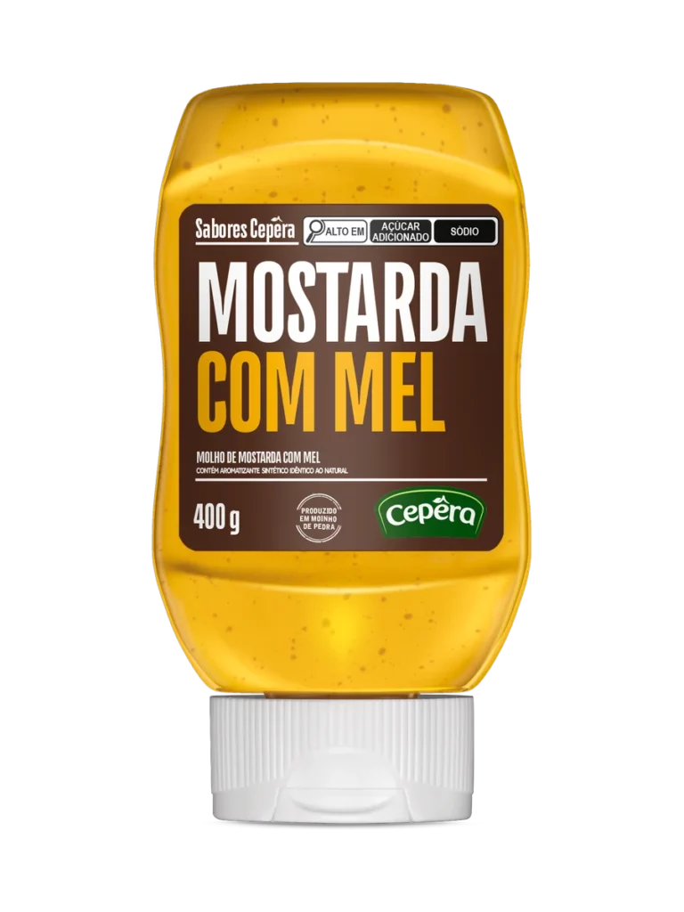
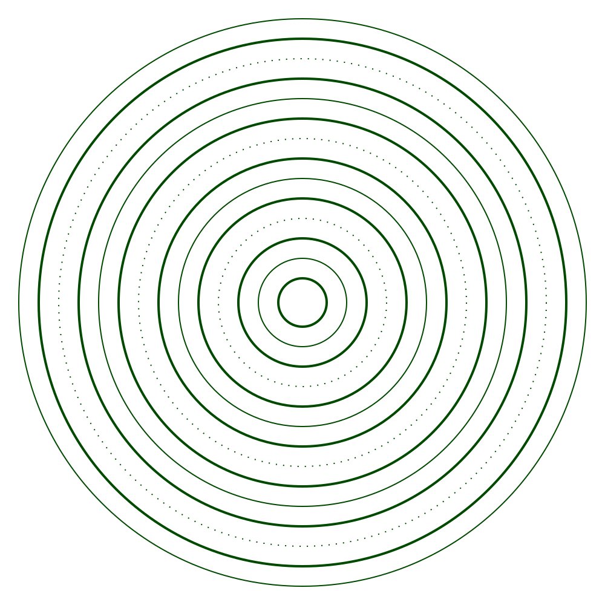
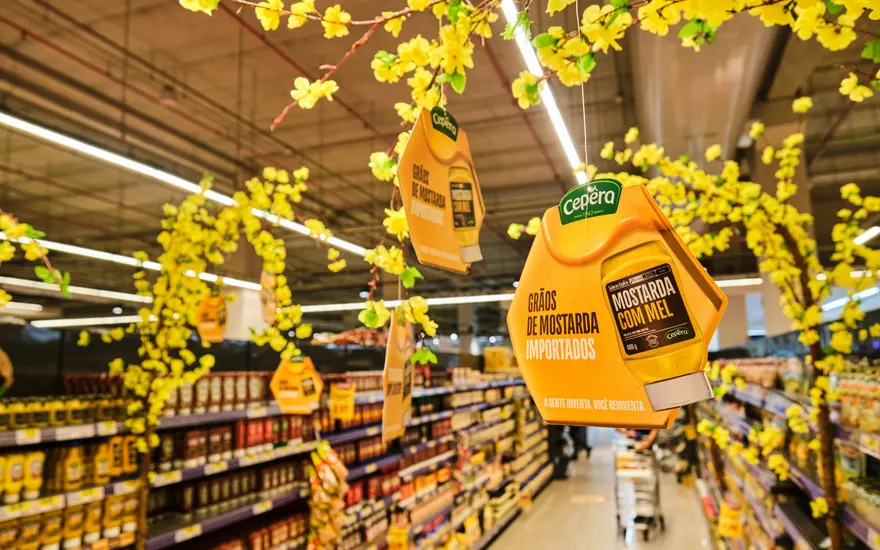
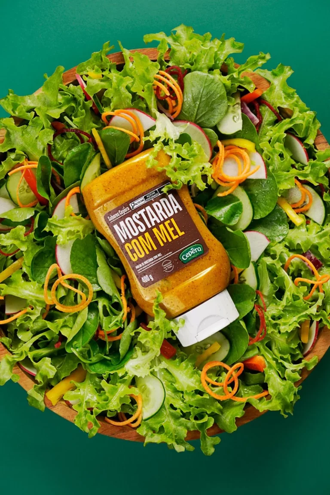
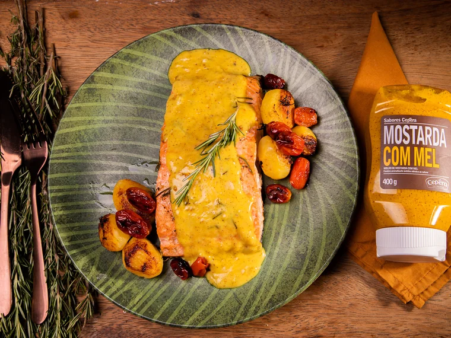
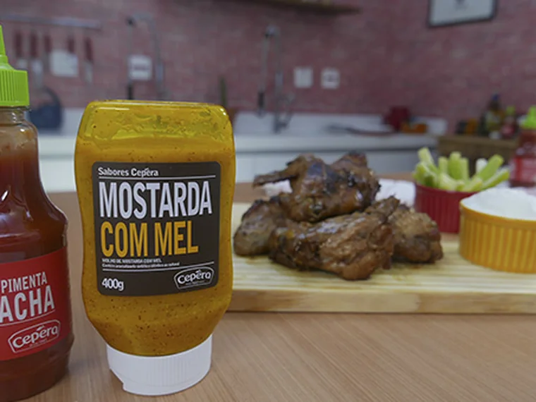

CEPÊRA · “SABOR QUE VAI COM TUDO”
vai com tudo.
para responder uma pergunta simples:
o quê?

→ ESPAÇO OU SETA PARA CONTINUAR

Planejamento estratégico · 75LAB × Cepêra
Do prato
à prova.
O que vamos discutir hoje
Cinco capítulos. Uma loja, um produto e um ciclo completo de execução.
Leitura
O desafio aparente, o desafio real e o que ainda não sabemos.
EntenderContexto
Marca, produto, mercado, concorrência, shopper e tendências.
InvestigarVirada
Insights, tensão central e a oportunidade que muda o projeto.
DecidirSolução
Estratégia, conceito, sistema modular, 3D/AR e rastreamento.
RevelarExecução
Entregáveis, KPIs, riscos, cronograma e próximo passo.
ComprovarCapítulo 01
Leitura
do desafio
Antes de propor peças, decupamos o pedido: o que foi dito, o que está por trás e o que ainda precisa ser descoberto.
01 · Leitura do desafio
Existem dois desafios neste projeto — e só um deles está escrito no briefing.
75LAB
Conquistar consideração comercial como provedora de soluções inteligentes, demonstrando competências integradas.
O ponto de encontro: um produto Cepêra comprado — e a execução comprovada
Cepêra
Traduzir seu posicionamento e sua variedade de produtos em escolhas mais fáceis no PDV, com execução consistente e investimento mensurável.
01 · Decupagem do briefing
O pedido é um enxoval de PDV. A necessidade é execução comercial consistente.
Critério de sucesso desta etapa: produto, problema e condições de piloto validados com a Cepêra. Objetivos da Cepêra são propostos, não confirmados.
01 · O que queremos provocar
Três públicos, três decisões: comprar, autorizar e validar.
01 · O que sabemos / o que precisamos descobrir
Sabemos o suficiente para propor — não o suficiente para prometer.
Confirmado · briefing e pesquisa pública
- Proposta comercial e proativa da 75LAB.
- Demonstração deve integrar estratégia, design e execução, sobre um produto real.
- Modularidade, AR, rastreio, clusterização e gestão de campo fazem parte do pedido.
- A marca usa “Vai com Tudo” e organiza o portfólio em Linha Cepêra, Mais Sabor, Profissional, UMAI e Collabs.
- Mostarda com Mel 400 g está no portfólio oficial.
- A Cepêra já fez ambientação de PDV para Mostarda com Mel, com displays, réguas, stoppers e QR.
Precisamos descobrir
HIPÓTESE DE PLANEJAMENTO · Mostarda com Mel 400 g, foco inicial no varejo alimentar e três configurações físicas. Não representa prioridade comercial confirmada pela Cepêra.
Capítulo 02
Marca, mercado
e shopper
Onde a Cepêra está, onde a categoria acontece e como o shopper decide.
02 · Contexto de marca
A Cepêra já diz que vai com tudo. No PDV, o shopper precisa ver com o quê.
Posicionamento atual · out/2026
“Sabor que vai com tudo”
→ vai com a salada que você está comprando.
→ vai com o sanduíche que você vai preparar.
Amplitude de portfólio só vira vantagem para o shopper quando ele identifica o que serve para a sua necessidade. Exemplos de desdobramento sujeitos à aprovação da marca.
cepera.com.br (home, Mais Sabor, Linha Cepêra, Profissional, Molhos) · Marcas pelo Mundo, 29/10/2026 — “Vai com Tudo” e 80 anos em 2027.
02 · Produto demonstrador recomendado
Mostarda com Mel 400 g: um nome que já sugere o prato.
Permite explorar refeições e acompanhamentos distintos.
O próprio nome oferece uma pista de sabor.
Abre hipóteses de presença perto de alimentos complementares.
O mesmo produto ocupa configurações diferentes.
Há espaço para demonstrar usos simples.
Dispensa, neste recorte, a dependência de identidade de collab.
cepera.com.br/produto/condimentos/mostarda-com-mel-400g-sabores-cepera · Dimensões, peso bruto, caixa de embarque, GTIN e rótulo atual a obter antes do executivo.
02 · Ponto de atenção
A marca já ambientou a loja com este produto. O avanço agora é provar a execução.

Origem da marca: “desde 1947”.
Ambientação de PDVs para Mostarda com Mel: árvore da mostarda, adesivos, frames, faixas de gôndola, stoppers, displays de chão e QR para conteúdo.
“Vai com Tudo”: reorganização das linhas e novo posicionamento.
80 anos. Janela para transformar posicionamento em ocasiões concretas na loja.
Peças físicas com QR já fazem parte do repertório da marca. A diferenciação precisa avançar para adaptação por loja, gestão do ciclo de vida do material e comprovação da execução.
cepera.com.br/mostarda-com-mel-pdv (publicado em 18/12/2023) · Marcas pelo Mundo, 29/10/2026.
02 · Contexto de mercado
A categoria é grande e acontece na loja física: a disputa é decidida na gôndola.
Vendas no varejo · molhos, dips e condimentos · Brasil · 2024
4º maior mercado de varejo da categoria no mundo. Recorte amplo: não equivale ao mercado de mostarda com mel.
CAGR em US$
2020–2024
das vendas da categoria passaram pelo varejo alimentar físico em 2024.
→ a execução física merece prioridade
concentrados nas cinco maiores companhias — o restante é um mercado fragmentado.
→ grandes grupos e regionais na mesma gôndola
Agriculture and Agri-Food Canada, Sector Trend Analysis – Sauces, dips and condiment trends in Brazil (2026), dados Euromonitor International (ano-base 2024). Crescimento em valor (US$) não prova crescimento em volume. Não são estimativas de participação da Cepêra.
02 · Comportamento de compra
Viagens mais frequentes e carrinhos menores: a peça precisa ser entendida em segundos.
Kantar · Brasil · 3º trimestre de 2024
Carrinhos menores
Mais visitas às lojas
No atacarejo: mais unidades compradas, com menos unidades por viagem.
Comportamento geral · não comprovado para o SKU- Canal não determina sozinho a missão.Uma compra de reposição pode acontecer no atacarejo.
- Valor precisa aparecer claramente.Preço, quantidade e aplicação devem ser legíveis.
- A peça precisa funcionar na rotina.Abastecimento e manutenção influenciam o resultado.
- Valor de categoria não promete incremento.O mercado endereçável só será dimensionado com distribuição, mix e vendas das lojas elegíveis.
Kantar, “Consumidores brasileiros mudam o comportamento com mais visitas às lojas e carrinhos menores” (2025; análise do 3º tri/2024).
02 · Concorrência pela escolha do shopper
Sabor e receita já são território ocupado. Ocasião clara com execução verificável, não.
Leitura
- Convergência observada sabor, receitas, variedade
- Risco de semelhança “fica mais gostoso” + QR
- Decisão real do shopper “qual acompanhamento usar?”
Posições qualitativas, a partir de comunicação pública. Não há evidência suficiente para comparar os materiais de PDV atuais dessas marcas: isso exige auditoria de lojas com registro fotográfico padronizado.
Zaffari (listagem Hemmer) · Pressroom Heinz · hellmanns.com.br/receitas · predilecta.com.br · consultas em novembro de 2026.
02 · Concorrência pela contratação
Ter um aplicativo não diferencia. Fechar o ciclo entre dado, correção e criação, sim.
ciclo
Quem também disputa este orçamento
- Fabricantes de displays peça
- Agências de ativação campanha
- Operadores de merchandising campo
- Plataformas de gestão de campo dado
A Involves já documenta roteirização, pesquisas, acompanhamento de campo e reconhecimento de imagem. A vantagem da 75LAB precisa estar na conexão entre as quatro pontas, não em uma delas isolada.
Involves · Central de Ajuda “O que é Involves Stage?” e página “Reconhecimento por Imagem”, consultadas em 17/11/2026.
02 · Shopper e públicos
Oito públicos decidem se a peça funciona. O shopper é só o primeiro deles.
02 · Jornada proposta
O shopper se interessa pelo prato antes de se interessar pelo molho.
Contexto
Estímulo
Interesse
Interação
Decisão
Ação
Experiência
HIPÓTESES A VALIDAR com entrevistas diante da gôndola, observação e teste de comunicação. Momentos em destaque: onde a peça física decide.
02 · Hipóteses de comportamento
O shopper pode gostar da ideia — e ainda assim desistir na frente da gôndola.
- Antes do PDVO shopper pode planejar a refeição sem planejar a marca do molho.
- Durante o PDVPode reconhecer a categoria, mas não distinguir aplicações entre variantes.
- Na escolhaPode gostar da ideia e desistir por preço, embalagem, dúvida de uso ou falta de estoque.
- O que aumenta a conversão?Hipótese: relevância + disponibilidade + valor. Validação: piloto com dados de vendas.
02 · Tendências com relação real com o desafio
Quatro movimentos que já acontecem — cada um com uma aplicação e um limite.
Compra distribuída entre canais
AplicaçãoAdaptar a solução por missão de compra e operação de loja.
LimiteValidar o comportamento local.
Comunicação de aplicação culinária
AplicaçãoMostrar como o produto entra na refeição.
LimiteReceitas, isoladamente, não diferenciam.
Execução apoiada por dados e imagem
AplicaçãoRegistrar evidências e priorizar correções.
LimitePrecisão e cobertura precisam ser comprovadas.
Conteúdo conectado ao PDV
AplicaçãoUsar QR quando houver benefício claro para o shopper.
LimiteScan não equivale a venda.
Kantar (2025) · receitas Hellmann’s e Cepêra · histórico Cepêra · Involves. Recomendações de aplicação, sem pressupor adoção atual pela Cepêra.
Capítulo 03
Insight, tensão
e oportunidade
O momento em que o pedido deixa de ser uma lista de peças e passa a ser um problema de negócio.
03 · Principais insights
Sete insights. Três deles mudam o projeto.
O shopper pode se interessar pelo prato antes de se interessar pelo molho.
→ aplicação reconhecível“Vai com Tudo” ganha força na loja quando mostra com o que vai naquele momento.
→ adaptar a ocasião ao ponto de instalaçãoO material só existe comercialmente quando está instalado, abastecido e utilizável.
→ medir a operação durante a campanhaModularidade tem valor quando reduz exceções, retrabalho e estoque de componentes.
→ peças e interfaces compartilhadasUma foto prova uma condição observada. Só uma rotina de correção muda essa condição.
→ auditoria ligada a responsável, prazo e fechamentoUma experiência digital precisa devolver mais valor do que exige de esforço.
→ conteúdo rápido e opcionalA melhor demonstração da 75LAB é resolver um problema do começo ao fim.
→ um caso conectado, com desvio e correçãoProposições estratégicas derivadas da pesquisa, sujeitas à validação. Insights 2, 3 e 5 conectam a marca à compra e a criação à entrega operacional.
03 · Tensão central
Desejo e realidade puxam em direções opostas em três pontos.
Escolha
Escala
Controle
A marca quer estar em mais ocasiões, mas essa promessa precisa caber no espaço, na decisão do shopper e na rotina de cada loja.
03 · Oportunidade · Como podemos…
Como podemos fazer a Mostarda com Mel entrar numa refeição que o shopper já pretende preparar, com uma exposição que caiba na loja e uma operação que permita verificar e melhorar sua execução?
Capítulo 04
Estratégia
e solução
Do princípio estratégico ao conceito, ao sistema físico e ao dado de campo.
04 · Estratégia
De vitrine de competências para prova de um ciclo comercial completo.
Uma demonstração de competências da agência, organizada em peças e funcionalidades.
Uma prova concreta de como a 75LAB apoia escolha, execução e aprendizado comercial.
Uma ativação por ocasião de consumo, em módulos adaptáveis, conectada à gestão de campo.
Estratégia em uma frase
Dar uma ocasião clara ao produto e uma rotina verificável à sua presença na loja.
04 · Pilares
Quatro pilares, cada um com uma decisão concreta de projeto.
Tornar o uso evidente
Produto, prato e mensagem compreendidos rapidamente.
Adaptar com uma base comum
Configurações compartilham componentes quando isso gera eficiência.
Facilitar compra e reposição
Preço e acesso ao produto fazem parte da experiência.
Transformar evidência em ação
O acompanhamento precisa levar a correções.
04 · Territórios conceituais
Quatro caminhos possíveis. Recomendamos combinar dois — com papéis diferentes.
Vai com o que você leva
Conectar o produto à refeição que já está sendo comprada. Torna “Vai com Tudo” específico no contexto da loja.
- Experiência
- O mesmo módulo assume salada ou sanduíche conforme o local autorizado.
- Potencial
- Cross merchandising e aprendizado sobre localização.
- Limite
- Autorização e abastecimento fora da gôndola original.
Um toque. Outro prato.
O produto como pequena mudança capaz de renovar o preparo habitual. Conversa com a intensidade de Mais Sabor.
- Potencial
- Expansão para outros produtos e usos.
- Limite
- Comparações precisam ser apetitosas e realistas.
Seu próximo favorito
Facilitar a descoberta de um sabor que pode entrar na rotina. Da curiosidade à experimentação.
- Potencial
- Expansão de repertório e de mix.
- Limite
- O produto principal não pode sumir entre muitas opções.
Sabor em dia
Garantir que a promessa da marca esteja presente e bem executada. Protagonismo para a consistência operacional.
- Experiência
- Instalação, auditoria, desvio, correção e acompanhamento.
- Potencial
- Contratação recorrente de gestão e melhoria.
- Limite
- Discurso B2B, não campanha para o shopper.
O conceito · Território 01
Vai com
o que você
leva.



Linhas e imagens ilustrativas · sujeitas à aprovação da marca
04 · Ecossistema de soluções
Um herói, sete apoios e três escalas: um sistema, não uma peça.
04 · Veja no seu espaço
Antes de produzir, a peça entra na loja pelo celular.
≈ 72 × 46 × 186 cm
Realidade aumentada
Aponte a câmera do celular
- 01Abra o QR no celular (iOS: Quick Look · Android: Scene Viewer / WebXR).
- 02Toque em “Ver no seu espaço” e aponte para o piso da loja.
- 03Alterne A, B e C para comparar ocupação e circulação.
Volumetria conceitual
Modelo para discussão. Medidas, materiais, carga e estabilidade dependem de levantamento e protótipo. AR não substitui validação física.
04 · Scale · configurações por cluster
O canal indica o contexto. O cluster define a intensidade.
A · Experiência
- Onde
- Lojas com espaço e operação disponíveis.
- Critérios
- Potencial, área autorizada, abastecimento e atendimento.
- Solução
- Módulo de chão, comunicação de ocasião e degustação em períodos definidos.
B · Presença
- Onde
- Lojas com espaço intermediário.
- Critérios
- Potencial e frequência de reposição compatíveis.
- Solução
- Expositor compacto ou solução em ponta autorizada.
C · Essencial
- Onde
- Lojas com área restrita.
- Critérios
- Mix disponível e capacidade de manutenção.
- Solução
- Kit de gôndola com régua, porta-preço e sinalização reduzida.
04 · Detalhes técnicos · vista explodida
Uma base comum, comunicação que troca sem trocar a estrutura.
- Prateleiras reguláveis, se o mix justificar.
- Comunicação substituível sem trocar a estrutura.
- Fixações compatíveis com o mobiliário autorizado.
- Bordas protegidas e base estável.
- Reposição e retirada sem interferir na testeira.
- Componentes identificados para reposição.
- Rodízios com trava só com necessidade validada.
Comparar alternativa temporária e durável pelo ciclo completo. Dimensões, material e carga nascem de amostras reais.
04 · Inovações
A inovação não está na tecnologia isolada. Está em seis camadas resolvendo seis problemas.
Comunicação
Mensagem por ocasião e localização.→Uso pouco evidente.Design
Configurações que compartilham componentes.→Adaptação entre lojas.Operação
Auditoria conectada à correção.→Desvios que permanecem abertos.Tecnologia
AR para configuração; QR para conteúdo e identificação.→Dificuldade de visualizar e acompanhar.Comercial
Implantação e serviço recorrente contratáveis em módulos.→Escopo e responsabilidade pouco claros.Dados
Relação entre loja, material, visita e período.→Evidências dispersas.Plano de Rastreamento 75LAB
Da peça
ao dado.
Uma visão de PDV mensurável e rastreável — sem prometer tecnologia que não esteja disponível.
Plano de Rastreamento 75LAB · fluxo
Cada ativo de PDV gera um rastro. O valor está em transformá-lo em decisão.
Rotas, operação offline, permissões, integrações, reconhecimento de imagem, suporte e SLA precisam ser verificados na plataforma 75LAB antes da reunião. Dados pessoais: finalidade, acesso, retenção e base legal definidos por tratamento (ANPD, 2024).
Plano de Rastreamento 75LAB · modalidades
Uma foto da implantação ou o filme da permanência.
Modalidade 01 · leitura pontualOne Shot
- Implantação
- Auditoria
- Registro fotográfico
- Presença e conformidade
- Localização na loja
- Preço e disponibilidade
- Evidências e relatório
- ID do ativo vinculado
RespondeO material foi entregue, instalado e está conforme o padrão?
Modalidade 02 · acompanhamento recorrenteOn Timing
- Permanência e histórico
- Disponibilidade observada
- Manutenção e integridade
- Alertas e ocorrências
- Interação agregada (QR)
- Movimentação e retirada
- Performance por loja e cluster
- Sensores/RFID se houver caso
RespondeO material continuou funcionando durante a campanha — e o que foi corrigido?
Plano de Rastreamento 75LAB · o que é acompanhado
Antes de escolher tecnologia, definir o objeto rastreado.
Plano de Rastreamento 75LAB · demonstração
A melhor prova: um desvio detectado, corrigido e registrado.
Eventos recentes
Disponibilidade por cluster
O painel da demonstração deve diferenciar dados reais, simulados e ainda indisponíveis. Todos os números desta tela são ilustrativos.
Capítulo 05
Execução
e próximos passos
Benefícios, entregáveis, indicadores, riscos, cronograma e a decisão que pedimos hoje.
05 · Benefícios
Cada benefício alimenta o próximo: do prato do shopper à decisão da Cepêra.
+ rotina
verificável
Shopper
- Entende o uso em segundos
- Encontra preço e produto
Marca
- “Vai com Tudo” vira ocasião concreta
- Padrão preservado em lojas diferentes
Varejo
- Solução que cabe na loja
- Reposição e limpeza possíveis
Operação
- Menos exceções e retrabalho
- Desvios com dono e prazo
Comercial
- Escopo modular e contratável
- Entrada gradual, sem pacote fechado
Dados
- Loja, material, visita e período
- Base para decidir manter ou escalar
05 · Entregáveis e priorização
Primeiro o que torna o piloto avaliável. Depois, o que o torna memorável.
13 entregáveis em 8 frentes: estratégia, criação, 3D, engenharia e produção, conteúdo, digital, implementação/treinamento e mensuração. A AR entra na apresentação; a escala depende do benefício validado.
05 · KPIs · resultados esperados
Sem baseline, não há meta de incremento. Há método para descobri-lo.
Negócio Cepêra
- Unidades e receita por loja/SKUsell-out
- Incremento estimadobaseline e controle
- Resultado econômicomargem incremental × custo total
Trade
- Implantação válidaPDVs conformes / previstos
- Disponibilidade observadavisitas com produto / válidas
- Exposiçãofrentes e localização
Shopper
- Clareza de usoteste de compreensão
- Experimentaçãoamostras e entrevistas
Digital
- Acesso e consumo de conteúdosessões, aberturas, conclusão
Operacional
- Tempo de instalação e correçãoregistro de eventos
- Integridade e reutilizaçãoauditorias e histórico
Dados · 75LAB
- Qualidade da evidênciacompletude e revalidação amostral
- Avanço comercialreunião, dados, piloto contratado
Desenho de avaliação · grupos comparáveis
Barras meramente ilustrativas da lógica de comparação · diferenças em diferenças.
RESULTADO ESPERADO ≠ RESULTADO REAL. Nenhum ROI é projetado nesta fase. Scans não medem conversão; disponibilidade em uma visita não prova disponibilidade durante toda a campanha.
05 · Riscos · pre-mortem
“O projeto fracassou porque…” Onze riscos, onze defesas.
O SKU não era prioritário.
Validar distribuição, estoque e objetivo comercial.
O varejista não autorizou a localização.
Negociar espaços e prever alternativa de gôndola.
O material atrapalhou a operação.
Testar reposição, circulação e limpeza.
Houve ruptura.
Definir abastecimento e responsável por correção.
A comunicação chamou atenção, mas não explicou o uso.
Testar compreensão antes da produção.
A tecnologia gerou esforço sem benefício.
Simplificar o fluxo e manter alternativa acessível.
O aplicativo exigiu duplicação de trabalho.
Avaliar integração e rotina existente.
O custo logístico anulou a vantagem modular.
Comparar custo total e volume transportado.
O dashboard reuniu dados sem responsáveis.
Definir regras de ação e fechamento.
O piloto não permitiu avaliar resultado.
Garantir dados, controles e protocolo antes da implantação.
A demonstração prometeu recursos indisponíveis.
Identificar claramente maturidade e dependências.
Passe o cursor ou toque
Cada risco vira um critério de entrada do piloto.
05 · Cronograma
Sete fases com portões de decisão: só avança o que foi validado.
Descoberta
Conversa com a Cepêra, dados, auditoria de lojas e entrevistas.
Estratégia
Hipótese, ocasião, clusters, indicadores e escopo.
Criação
Conceito, enxoval, 3D/AR e fluxos de campo.
Prototipagem
Protótipo, carga, montagem, transporte e tecnologia.
Piloto
Produção, implantação e acompanhamento One Shot + On Timing.
Aprendizado
Resultado, desvios e ajustes.
Escala
Padronização, compras, logística e atendimento.
Escala progressiva · referências, não amostra do piloto
05 · Oferta comercial
Três módulos de entrada gradual — conectados, mas contratáveis um a um.
Planejamento e implantação
Diagnóstico, criação, engenharia, produção e instalação.
Gestão de execução
Plataforma, pesquisa, auditoria, acompanhamento e suporte, conforme escopo.
Aprendizado e expansão
Análise, melhorias e adaptação para outras lojas ou produtos.
Valores de investimento não fazem parte deste documento: dependem de escopo, quantidade de lojas e prazo, a definir na descoberta.
05 · Síntese para decisão
Seis perguntas, seis respostas.
Apresentar a 75LAB por um enxoval de PDV que demonstre criatividade, modularidade, tecnologia e gestão de campo.
Transformar essas competências em uma proposta relevante, com escopo contratável e benefício verificável.
Traduzir “Vai com Tudo” em ocasiões concretas de compra, sustentadas por execução consistente em lojas diferentes.
Ocasião clara para o produto. Rotina verificável para a loja.
Demonstrar um sistema que conecte comunicação, módulos físicos, produção, operação de campo e aprendizado.
Validar com a Cepêra o produto, o problema e as condições de um piloto antes do desenvolvimento executivo.
05 · Próximo passo
O que pedimos hoje: uma reunião de diagnóstico com marketing, trade e comercial.
- Validar SKU e prioridade comercial
- Canal e região iniciais
- Espaço e regras das lojas
- Abastecimento e cobertura
- Plataforma atual de campo
- Acesso a dados de sell-out
- Faixa de investimento e calendário
O que criar primeiro
Uma loja. Um produto.
Um ciclo completo.
“Sabor que vai com tudo.”
Na loja, vai com
o que você leva.
E a gente prova
que chegou lá.
Fontes
Fatos com fonte. Hipóteses identificadas como hipóteses.
- 01Marcas pelo Mundo. Cepêra adota conceito “Vai com Tudo” e renova posicionamento para celebrar 80 anos. 29/10/2026. marcaspelomundo.com.br/…/cepera-adota-conceito-vai-com-tudo…
- 02Cepêra. Site institucional e arquitetura de linhas. cepera.com.br
- 03Cepêra. Mais Sabor. cepera.com.br/marcas/mais-sabor
- 04Cepêra. Mostarda com Mel 400 g. cepera.com.br/produto/…/mostarda-com-mel-400g
- 05Cepêra. Ambientação de PDVs para Mostarda com Mel (publicado em 18/12/2023). cepera.com.br/mostarda-com-mel-pdv
- 06Cepêra. Linha Cepêra · Profissional · Molhos e collabs. cepera.com.br/marcas
- 07Agriculture and Agri-Food Canada. Sector Trend Analysis – Sauces, dips and condiment trends in Brazil. 2026 (Euromonitor, ano-base 2024). agriculture.canada.ca/…/sauces-dips-and-condiment-trends-brazil
- 08Kantar. Consumidores brasileiros mudam o comportamento com mais visitas às lojas e carrinhos menores. 2025. kantar.com/brazil/…/consumidores-brasileiros
- 09Zaffari. Hemmer — listagem de produtos. zaffari.com.br/hemmer
- 10Pressroom / Heinz. “Não Pode Ser Quase. Tem Que Ser Heinz”. eagora.pressroom.com.br/…/heinz
- 11Hellmann’s Brasil. Receitas. hellmanns.com.br/receitas
- 12Predilecta. Pesquisa de produtos. predilecta.com.br
- 13Involves. O que é Involves Stage? · Reconhecimento por Imagem. involves.com/pt-br/stage
- 14ANPD. Guia Orientativo sobre Legítimo Interesse. 2024. gov.br/anpd/…/legitimo-interesse
- 15Planejamento Estratégico 75LAB × Cepêra (documento-base, 17/11/2026). Imagens de produto e receitas: cepera.com.br.
Obrigado
Ideia boa é
a que acontece.
75 LAB
- Razão social
- 75 LAB Estratégia, Design e Produção Ltda.
- CNPJ
- 55.470.982/0001-77
- Endereço
- Av. das Nações Unidas, 12.901, Torre Norte (CENU) · CEP 04578-910
- Cidade
- São Paulo · SP
- Telefone
- (11) 98676-5634
- Site
- 75lab.com.br
- contato@75lab.com.br
- Redes
- @setecincolab · LinkedIn
Apresentador
- Nome
- [preencher]
- Cargo
- [preencher]
- [preencher]
- Telefone
- [opcional]
Parceria

Planejamento estratégico · diagnóstico inicial para validação. Hipóteses sujeitas à validação comercial e operacional.
17 · 11 · 2026